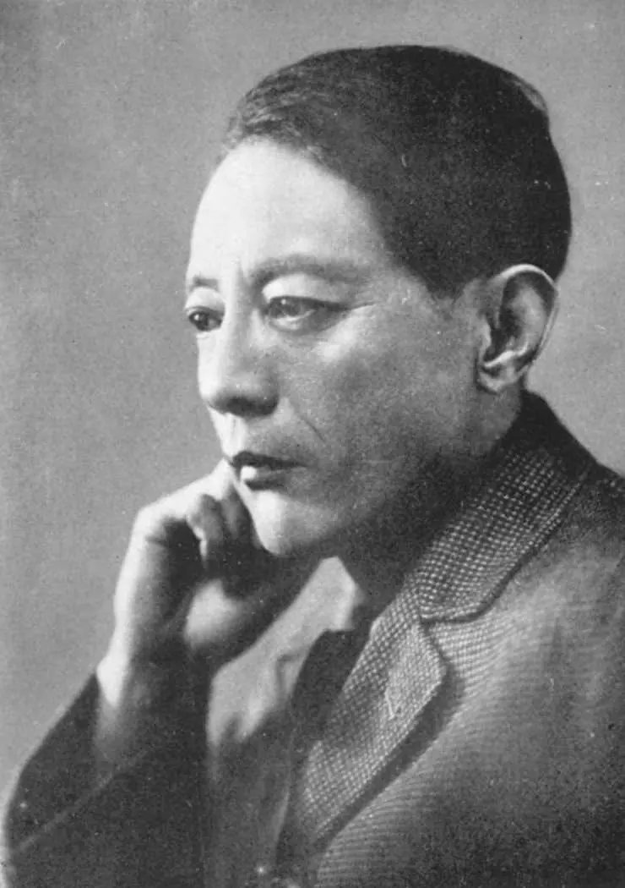
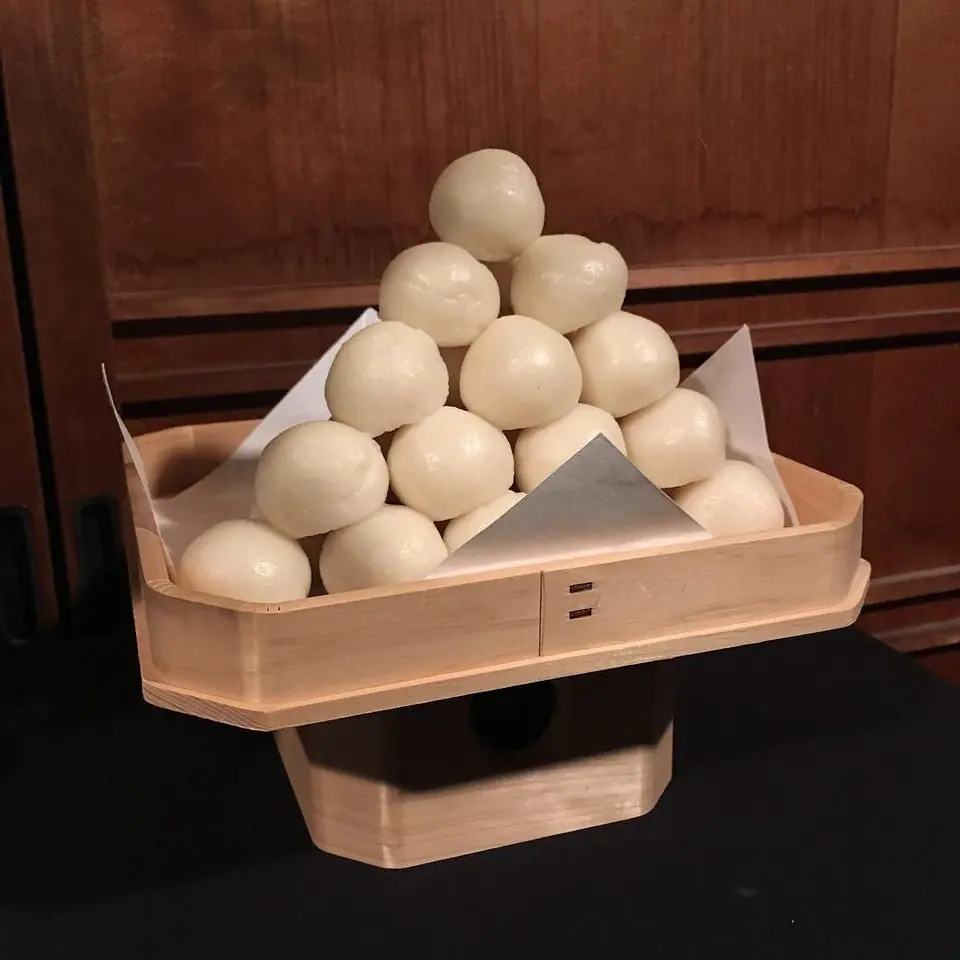
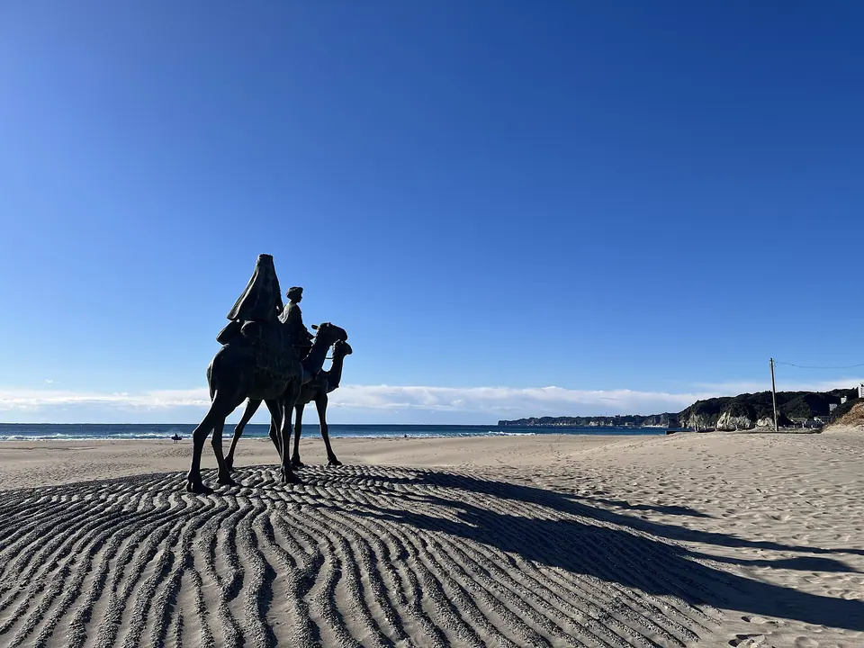
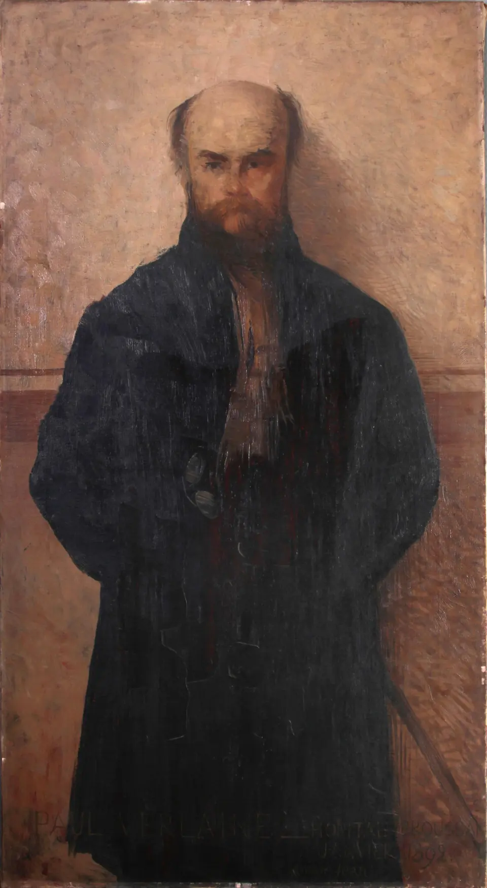
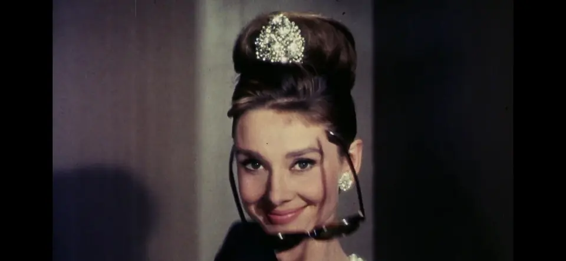

Series — The Moon · vol.1
月に吠える
〜月を見て歌う人々〜
月の特集 vol.1。
人はなぜ月を見るのか。月に話しかけてきた人たちの歌を、ぜんぶこのページの中で聴ける。
IN THIS ISSUE
 CHAPTER 00DANCING WITH THE MOONLIGHT
CHAPTER 00DANCING WITH THE MOONLIGHT CHAPTER 01Mr. Moonlight
CHAPTER 01Mr. Moonlight CHAPTER 02ROSIER
CHAPTER 02ROSIER CHAPTER 03Fly Me to the Moon
CHAPTER 03Fly Me to the Moon CHAPTER 04荒城の月
CHAPTER 04荒城の月 CHAPTER 05十五夜お月さん
CHAPTER 05十五夜お月さん CHAPTER 06月の沙漠
CHAPTER 06月の沙漠 CHAPTER 07朧月夜
CHAPTER 07朧月夜 CHAPTER 08月を盗む
CHAPTER 08月を盗む CHAPTER 09Clair de lune
CHAPTER 09Clair de lune CHAPTER 10Piano Sonata No. 14 "Moonlight" — I. Adagio sostenuto
CHAPTER 10Piano Sonata No. 14 "Moonlight" — I. Adagio sostenuto CHAPTER 11Moon River
CHAPTER 11Moon River CHAPTER 12How High the Moon
CHAPTER 12How High the Moon CHAPTER 13Old Devil Moon
CHAPTER 13Old Devil Moon CHAPTER 14サーチライト
CHAPTER 14サーチライト CHAPTER 15三日月
CHAPTER 15三日月 CHAPTER 16Billie Jean
CHAPTER 16Billie Jean
月には、行ったことがある人が、まだ12人しかいない。
1969年7月から1972年12月まで、アポロ計画で月面に立ったのは12人。月まで飛んで帰ってきた人を全部足しても24人だWikipedia。それきり、誰も行っていない。「本当は行っていない」と言う人も、いまも世界のあちこちにいるWikipedia。それはそれとして。
僕は月に行ったことがない。たぶんこれからも行かない。コンビニの帰りに、袋を提げたまま、意味もなく見上げるくらいだ。それでも人類は、何千年ぶん、月を見てきた。見て、祈って、恋をして、狂ったことにされて、吠えて、歌った。人は、月に話しかけてきた。
この特集は、月の名曲ランキングではない。月に話しかけた人たちの歌を、話しかけた順でもなく、僕が聴いてほしい順に並べた。まず、月あかりの下で踊った男から。
順番は年代順ではありません。まず、ギターを置いて歌った男から。
ギターを置いて、月あかりで踊った
布袋寅泰 - DANCING WITH THE MOONLIGHT
アルバム『GUITARHYTHM』 ／ 1988.10.5
1988年10月5日に出た、ソロ1作目のアルバム『GUITARHYTHM』の10曲目WikipediaWikipedia。BOØWYが終わった年に、あの布袋寅泰が最初にやったことのひとつが「月あかりと踊る」だった。
録音はロンドンのアビー・ロード・スタジオ、それも第2スタジオ。ビートルズが使った部屋だ。海外録音を言い出したのはキーボードのホッピー神山で、アビー・ロードにしたのもビートルズ好きの彼の意向だったWikipedia。翌1989年、イギリスのパーロフォンから英国限定の12インチシングルとして出た。これが成功すればアルバムも英国で出る予定だったのに、ほとんど売れず、早々に廃盤。アルバムの英国発売は消えたWikipedia。
曲には、デヴィッド・ボウイとロキシー・ミュージックへのオマージュが見えるWikipedia。MVは、ギターを持った「花」が東京タワーを登っていくアニメーション。監督は永石勝、アニメーション監督は前田真宏。ガイナックスの面々が関わっている。
1988年10月26日、国立代々木競技場の「GUITARHYTHM LIVE」で初披露。その日の布袋は、この曲でギターを持たず、歌だけでステージに立ったWikipediaWikipedia。ギターの神様みたいな人が、月の前では手ぶらになる。この特集は、そこから始めたかった。
月あかりで踊った男の、25年前。リバプールの4人は、レコードの裏側で月を拾っていた。
B面で拾った月を、叫ぶところから始めた
The Beatles - Mr. Moonlight
アルバム『Beatles for Sale』 ／ 1964.12.4
書いたのはロイ・リー・ジョンソン。最初に録音したのは、アトランタのドクター・フィールグッド＆ジ・インターンズ。1962年、「Dr. Feelgood」というシングルのB面だったWikipedia。
ドクター・フィールグッドの正体は、ウィリー・ペリーマン。「ピアノ・レッド」の名で知られるアルビノの黒人ブルース・ピアニストで、ポップ・チャートに入った最初のブルース・ミュージシャンだWikipedia。ビートルズはそのレコードを裏返して、この曲に当たった。1962年の半ばにはもうライブでやっていて、ハンブルクのスター・クラブでの録音も残っているWikipedia。
ライブでは、よくこれが1曲目だった。ジョンがいきなり「ミスター！」と叫ぶ。前に鳴るコードが何もない。何もないところから正しい音を出さないといけない、と当時のロードマネージャーのニール・アスピノールが振り返っている。客席に、一瞬の緊張が走る。その緊張で、客をつかんでから演奏を始めたWikipedia。
レコーディングは1964年8月14日。10月18日、ツアーの休みの日に録り直して、ポールがハモンド・オルガンを足したWikipedia。12月4日発売の『Beatles for Sale』に収録。
ところがこの曲、評論家にはめっぽう評判が悪い。「ビートルズのいちばん人気のない曲のひとつ」「あのアルバムで、たいていの人がいちばん嫌いな曲」。ある批評家は、ポールのオルガン・ソロを「金ラメの悪趣味」と書き、「冗談で録ったのかもしれない」とまで言ったWikipedia。
もう1本 — 1962年、B面にあった原曲
叫ぶ月があるなら、吠える月もある。英語で「月」は、昔から「狂う」と隣り合わせだった。
狂気という名前を捨てて、月と海になった
LUNA SEA - ROSIER
3枚目のシングル ／ 1994.7.21
英語の lunatic（狂人）は、ラテン語の lunaticus——「月の」「月に打たれた」から来ている。もともとは、てんかんと狂気を指す言葉だった。月のせいで起きる病気、と信じられていたからだ。プリニウスは、満月が夜露のように脳に作用して狂気とてんかんを起こすと論じた。少なくとも1700年ごろまで、月が熱病やリウマチを左右するという考えは、ふつうに流通していたWikipedia。
日本では、1917年2月、萩原朔太郎が第一詩集『月に吠える』を出す。序文は北原白秋、跋文は室生犀星。中身は自費出版で、父をごまかして母から300円を引き出した。鎌倉の旅館に長期滞在して編集するという、当時としては異例のやり方だったWikipedia。発売後まもなく詩壇・文壇から激賞され、森鷗外も絶賛したWikipedia。
のちに朔太郎は、こう書いている。「私の詩集『月に吠える』を変態心理の代表作品の如く言ふ人があるが、そんなことからの御問合せならば少しく不愉快です」Wikipedia。月に向かって吠えると、人は勝手に、こちらを病気にする。
1989年、町田で5人が音を出したバンドは、インディーズ時代「LUNACY」——狂気——という名前だった。メジャーを視野に入れたとき、ひとつの意味に縛られないように、そして「月のように変化があって、海のように深く」という思いから、語尾を SEA に変えて2語にした。言い出したのはJだWikipedia。
1994年7月21日の「ROSIER」はオリコン初登場3位、ロングヒットになったWikipedia。2000年には初心に帰る意味で、アルバムに旧名『LUNACY』をつけた。2010年、東京ドーム初の無料ライブを LUNACY 名義でやり、インディーズ時代の曲ばかり演奏した。狂気と、月と海のあいだを、30年以上行ったり来たりしている。
もう1本 — 1998年、紅白で歌った月の名前のバンド
吠える月の話は、ここまで。次は、月に「飛ばして」と頼んだ歌。頼んだ歌のほうが、人類より15年早く着いた。

Photo: 不詳（鎌倉文学館／昭和文学全集） / Public domain / Wikimedia Commons「連れてって」ではなく「飛ばして」。その一語を守った
Frank Sinatra - Fly Me to the Moon
アルバム『It Might as Well Be Swing』（カウント・ベイシー楽団） ／ 1964
書いたのはバート・ハワード、1954年。もとの題は「In Other Words」。出版社に「もっと単純な歌を書け」と言われて、キャバレーのバラードとして20分で書いた。本人いわく「20分で歌を書く方法を見つけるのに、20年かかった」Wikipedia。
出版社は「fly me to the Moon」を「take me to the Moon」に変えろと言ってきた。ハワードは断ったWikipedia。連れて行ってもらうのと、飛ばしてもらうのでは、主導権が違う。この一語を守ったから、曲は「自分から行く歌」のまま残った。
最初の録音は1954年4月、ケイ・バラードWikipedia。1960年、ペギー・リーがエド・サリヴァン・ショーで歌って火がつき、1963年、彼女がハワードを説得して、題名を正式に「Fly Me to the Moon」に変えさせた。
そして1964年、シナトラがカウント・ベイシー楽団と録音する。編曲はクインシー・ジョーンズ。3拍子で書かれた曲を4拍子に変えたWikipedia。この版がNASAのアポロ計画と結びつく。1969年、月を周回したアポロ10号では、ソニーのポータブル・カセットプレーヤーでこの曲がかかり、人類が初めて月に降りたアポロ11号でも流れた。
書かれたのは1954年。人類が月に立ったのは1969年。歌は、行き先に15年早く着いていた。ハワードの見立てでは、1964年の時点で既に100以上の別バージョンがあり、1995年までに300回以上録音されているWikipedia。
聴きくらべ — 2000年、渋谷で月に飛んだ版
ここから先は、昔の曲を順番に。月に飛ぶ前、人は、城跡にのぼる月を見ていた。
城が消えて、月だけが残った
鮫島有美子 - 荒城の月
作詞：土井晩翠／作曲：瀧廉太郎 ／ 1901（明治34）
1901年（明治34年）、旧制中学校の唱歌の懸賞に、土井晩翠の詩があった。東京音楽学校の瀧廉太郎がそれに曲をつけた。日本で作曲された最初の西洋音楽の歌曲とされる作品だWikipedia。詩の依頼は1898年、晩翠は東京大学の大学院生。原題は「荒城月」。
歌の中に出てくるのは、もう無い城だ。背景には、1873年の廃城令があるWikipedia。明治政府は全国の城を壊していて、天守を失った石垣だけが各地に残っていた。仙台出身の晩翠は、会津の鶴ヶ城の解体された本丸跡も、富山城の本丸跡も見ている。会津の砲術家・山本八重が落城を悟って「明日よりはいづくの誰か眺むらん 馴れし大城に残る月影」と書き残した逸話が、晩翠の心に刻まれていたと伝わる。
瀧廉太郎は、小学生の頃を富山城のそばで、高等小学校を大分県竹田で過ごした。竹田の岡城址は石垣だけ。そこでひとり佇んで思索した、と伝わる。今、岡城址と富山城の西側には歌碑と廉太郎の銅像が立っているWikipediaWikipedia。
1903年6月29日、瀧廉太郎は大分の自宅で死んだ。満23歳。結核だったため、多くの作品が死後に焼却された。いま存在が確認されている作曲は34曲しかないWikipedia。
僕たちが習った「荒城の月」は、たぶん瀧のものではない。1917年、山田耕筰がロ短調からニ短調に移し、ピアノをつけ、テンポを半分にして、一番の「花の宴」の「え」の音から♯を取ったWikipedia。♯があると外国人はハンガリー民謡を連想する、だから三浦環に頼まれて山田は♯を取った——と、東京音楽学校の橋本国彦が語ったと伝わる。
城跡の月は、消えたものの証人だった。次の月は、いない人のことを、子どもに思い出させる。
月に「ごきげんさん」と挨拶してから、泣く
ひばり児童合唱団 - 十五夜お月さん
作詞：野口雨情／作曲：本居長世 ／ 1920（大正9）
1920年（大正9年）。鈴木三重吉の『赤い鳥』が創刊されて、従来の唱歌に代わる「童謡」が人気になっていた頃だ。本居長世は中山晋平の紹介で児童雑誌『金の船』に曲を書き始め、同じ年、新日本音楽大演奏会で発表したのが「十五夜お月さん」だったWikipedia。
歌ったのは、長世の長女・みどり。この曲で一躍有名になり、みどりは童謡歌手の第1号、レコード吹き込みの第1号にもなったWikipedia。作詞は野口雨情。「七つの子」「赤い靴」「シャボン玉」の人で、代表作の筆頭にこの曲が挙がるWikipedia。
歌は、月に「ごきげんさん」と挨拶するところから始まる。僕はこれを、日本でいちばん礼儀正しい歌だと思っている。挨拶をしてから、いなくなった人の話をする。月は何も言わない。言わないから、話せる。
1985年、本居長世の生誕100年に、目黒不動尊の境内にこの歌の歌碑が建った。呼びかけ人は藤山一郎と金田一春彦Wikipedia。金田一春彦は、長世の伝記の題名も『十五夜お月さん』にしている。
ここでは子どもの声で。ひばり児童合唱団は1943年、皆川和子が荻窪で始めた合唱団で、3歳から高校3年生までで構成されるWikipedia。
いない人を思う月。その3年後、二度と会えない人と、らくだで月夜を行く歌が生まれる。

Photo: evan p. cordes / CC BY 2.0 / Wikimedia Commons沙漠に行ったことのない人が、沙漠の歌を書いた
由紀さおり - 月の沙漠
作詞：加藤まさを／作曲：佐々木すぐる ／ 1923（大正12）
1923年（大正12年）3月、雑誌『少女倶楽部』。挿絵画家の加藤まさをが、詩と絵をセットで発表した作品だ。若手の作曲家・佐々木すぐるが曲をつけ、童謡になったWikipedia。
加藤本人は、後年こう語っている。「動機って、ただ少女倶楽部から『何でもいいから』と注文されただけですよ。ぼくは沙漠どころか、外国へはどこも出たことはないけれど」。頭にあったのはアラビアの情景。ところが初出のときに本人が描いたらくだは、アラビアのヒトコブではなく中央アジアのフタコブだった。後年の絵では直しているWikipedia。
新聞記者の本多勝一は、この詩を砂漠の描写としては空想的だと指摘した。遊牧民は水を甕ではなく皮袋で運ぶ、金属の甕では中の水が煮立つ、王子と姫が2人で旅をしたらたちまち略奪される。加藤はそれを認めて「とんでもないことを書いてしまったわけなんだが、今からじゃあどうしようもない」Wikipedia。
それでも本多は書いている。「『月の沙漠』の歌は、当時の日本人の心の奥底にあった夢を、美しく、具象的に表現したのである。だからこそ、この歌はいつまでも人気があるのだ」Wikipedia。
どこの砂浜で生まれたかで、いまも静岡の藤枝市と千葉の御宿町がもめている。御宿の海岸には1969年にらくだの記念像が建った。観光宣伝目的なら真っ平だと断った加藤を、町の商工会長が「青少年の情操教育が目的だ」と説き伏せたWikipedia。
由紀さおりは、子どもの頃から姉の安田祥子と童謡歌手だった。1986年に姉妹で童謡コンサートを始め、童謡ブームの火つけ役になったWikipedia。
月夜のらくだの9年前。春の夕方の月が、小学校の教科書に載った。

Photo: おにく / CC0 / Wikimedia Commons菜の花と、霞んだ月。日本人の春の既定値
槇原敬之 - 朧月夜
作詞：高野辰之／作曲：岡野貞一 ／ 1914（大正3）
1914年（大正3年）、『尋常小学唱歌 第六学年用』に初出。高野辰之の詞に、岡野貞一の曲Wikipedia。1948年から小学6年生の音楽の教科書に載りつづけている。
高野辰之は長野県の豊田村の生まれで、隣の飯山で小学校の先生をしていた時期がある。北信地方は江戸時代から菜種の栽培が盛んで、春は一面の菜の花畑。その光景が元だと考えられている。菜の花ではなく野沢菜だ、という説もあるWikipedia。
1989年、NHKを通じた全国アンケート「あなたが選ぶ日本のうた・ふるさとのうた」で第4位。2006年に「日本の歌百選」Wikipedia。鮫島有美子、ダークダックス、倍賞千恵子、由紀さおり・安田祥子が歌い、ポップスでは1986年に矢野顕子が、1998年に槇原敬之がカバー・アルバム『Listen To The Music』で歌っている。
2004年には、原曲に中島美嘉の詞と葉加瀬太郎の曲を足した「朧月夜〜祈り」が爽健美茶のCMに流れたWikipediaWikipedia。2016年からは、早咲きの菜の花で知られる神奈川県二宮町のJR二宮駅で、発車メロディになっている。
教科書の月は、春の夕方のやさしい月だった。次は、月をまるごと盗みにいく人。
神の声と呼ばれた人が、月を盗みにいく
元ちとせ - 月を盗む
PlayStation 2『GENJI』主題歌 ／ 2005
奄美大島の、30世帯くらいの集落で育った。中学3年で奄美民謡大賞の少年の部優秀賞、高校3年で史上最年少の大賞Wikipedia。島を出たのは美容師になるためで、尼崎の美容室で2年働いて、薬剤が体に合わず断念した。島に帰ろうと荷造りをしていたら、昔もらったレコード会社の名刺が出てきた。軽い気持ちで電話をかけた。
2002年、「ワダツミの木」がオリコン1位、80万枚。シマ唄の歌い方で歌うその声は「神の声」とも呼ばれたWikipedia。
「月を盗む」は2005年6月、PlayStation 2『GENJI』の主題歌。この年の1月に長女を産んだばかりで、8月6日には出産後初めてテレビに出て、広島の原爆ドームの前で坂本龍一と「死んだ女の子」を歌ったWikipedia。
本番前、慣れない生放送で緊張していると、隣の坂本が「大丈夫」と、元の手をギュッと握った。それで吹っ切れたWikipedia。
もう1本 — 元ちとせの、もうひとつの月
月を盗む声のあとは、月を「光」として書いた人。フランスの、仮面舞踏会の月。
題名を「感傷的な散歩」から変えたら、世界一有名になった
Claude Debussy - Clair de lune（月の光）
ベルガマスク組曲 第3曲／ピアノ：メナヘム・プレスラー ／ 1890〜1905
ドビュッシーがこの組曲を書き始めたのは1890年ごろ、28歳。出版は1905年で、その直前に大幅に手を入れたWikipedia。本人は、若い頃の未熟な曲だからと出版をためらっていた。15年のあいだに有名になった彼に、出版社が「いまなら売れる」と持ちかけ、1905年に承諾した。
第3曲の題名は、もともと「Promenade sentimentale（感傷的な散歩）」だった。1905年に「Clair de lune（月の光）」に変えた。どちらもポール・ヴェルレーヌの詩の題名で、曲集の名「ベルガマスク」も、ヴェルレーヌの「月の光」の冒頭に出てくる言葉から来ているWikipedia。月あかりの下で仮面をつけた人たちが踊る、あの詩だ。
つまりこれは、月を見た報告ではない。月あかりという「状態」を音にした曲だ。変ニ長調、8分の9拍子、アンダンテ・トレ・エクスプレシフWikipedia。同じ詩に曲をつけた歌曲が2つ別にあるので、混同しないこと、とWikipediaにまで注意書きがある。
ディズニーは1940年の『ファンタジア』にこの曲をオーケストラで入れるつもりだった。上映時間の都合で切られ、夜のエバーグレーズを飛ぶ鷺の映像は、1946年の別の映画で使い回された。1992年に未編集版が見つかって、復元されているWikipedia。1974年には冨田勲がシンセサイザーで演奏し、2021年8月8日、東京オリンピックの閉会式で、次の開催地パリへの目配せとして流れた。
弾いているメナヘム・プレスラーは1923年、ドイツのマクデブルク生まれ。ユダヤ人で、ナチスから逃れ、1955年にボザール・トリオを作って2008年の解散まで弾きつづけた。2013年12月、90歳でベルリン・フィルにデビューしている。2023年、ロンドンで99歳で死去Wikipedia。
題名を自分で変えた人の次は、題名を他人に変えられた人。

Photo: Edmond Aman-Jean / Public domain / Wikimedia Commonsベートーヴェンは、一度も「月光」と言っていない
Ludwig van Beethoven - ピアノソナタ第14番「月光」第1楽章
Sonata quasi una fantasia／ピアノ：ヴァレンティナ・リシッツァ ／ 1801
作品27の2。1801年に完成し、1802年、弟子のジュリエッタ・グィチャルディ伯爵令嬢に献呈された。楽譜の初版に書いてあるのは「Sonata quasi una fantasia（幻想曲風ソナタ）」だけ。名づけたのはベートーヴェンではないWikipedia。
「月光」の名前の出どころは、詩人ルートヴィヒ・レルシュタープ。1824年の小説『テオドール』で、第1楽章をこう書いた。湖は薄明の月のきらめきに憩い、くぐもった波が暗い岸を打つ、幽霊のような白鳥が滑る——。よく言われる「ルツェルン湖」は、1852年に音楽学者ヴィルヘルム・フォン・レンツが勝手に足したもので、レルシュタープは湖の名前を書いていないWikipedia。通称は、伝聞が伝聞を呼んでできあがっている。
批判は当時からあった。「葬送行進曲のような性格の楽章に月とは、誤解を招く」「馬鹿げている」。一方で『グラモフォン』誌の創刊者は「レルシュタープを責めるのは馬鹿げている。聴衆が月の光という暗示に乗らなければ、とっくに忘れられていた」と擁護したWikipedia。
第1楽章は、本人の時代から人気がありすぎた。弟子のチェルニーに、ベートーヴェンはこう言っている。「私はもっといいものを書いたはずだ」Wikipedia。ベルリオーズは「人間の言葉では形容できない詩」と呼び、リストは第2楽章を「2つの深淵のあいだに咲く一輪の花」と評した。
楽譜の題名を決めるのは作曲家で、曲の名前を決めるのは聴く人だ。その見本のような事件で、作曲家は負けた。負けたほうの曲が、200年のこっている。
他人に名前をつけられた月の次は、川と並べられた月。1961年、ニューヨークの非常階段で。
「私の死体を越えてからにして」。重役が切ろうとした歌
Audrey Hepburn - Moon River
映画『ティファニーで朝食を』／作曲：ヘンリー・マンシーニ／作詞：ジョニー・マーサー ／ 1961
1961年の映画『ティファニーで朝食を』。マンシーニとマーサーは、ヘプバーンが歌うためにこの曲を書いた。アカデミー歌曲賞、そして1962年のグラミーで最優秀レコードと最優秀楽曲Wikipedia。
マーサーの最初の題名は「Blue River」。ジョージア州サバンナで育った彼は、夏にハックルベリーを摘んだ記憶と、マーク・トウェインの『ハックルベリー・フィン』を重ねて書いた。青はハックルベリーの色だWikipedia。だからこれは月の歌であると同時に、故郷と、旅に出たい気持ちの歌でもある。
危うく消えかけた。ロサンゼルスの試写の反応が鈍く、パラマウントの重役マーティン・ラッキンが曲を切ろうと言い出した。ヘプバーンの反応は、マンシーニたちの証言によって程度に差があるが、「私の死体を越えてからにして！」から、もっと激しい言い回しまで伝わっているWikipedia。
歌が最初に聴こえるのは、ジョージ・ペパード演じるポールが、非常階段でギターを抱えて歌うホリーを見つける場面Wikipedia。この曲でマーサーは、ロックンロールに押されて止まっていた作詞家としてのキャリアを取り戻した。
アンディ・ウィリアムスは自分のテレビ番組の冒頭で毎回この曲の最初の8小節を歌い、自伝の題名も、プロダクションの名前も「ムーン・リバー」にした。サバンナ近くの入り江には、彼とこの曲にちなんで「ムーン・リバー」という名前がついているWikipedia。
映画の月は、旅立ちの合図だった。その前の時代、ジャズは月を「高さ」で測っていた。

Photo: Trailer screenshot / Public domain / Wikimedia Commons「月はどのくらい高い？」に、スキャットで答えた
Ella Fitzgerald - How High the Moon
アルバム『Ella in Berlin』／作曲：モーガン・ルイス／作詞：ナンシー・ハミルトン ／ 1940 / 1960
1940年、ブロードウェイのレヴュー『Two for the Show』で初めて歌われた曲。最初のヒットは同じ年のベニー・グッドマン楽団、歌はヘレン・フォレストWikipedia。
エラ・フィッツジェラルドがこの曲を初めて歌ったのは1947年9月29日、カーネギー・ホール。同年12月20日に初録音したWikipedia。いちばん有名なのは、1960年のアルバム『Ella in Berlin』の演奏。2002年にグラミーの殿堂入りした。ガーシュウィンの「Oh, Lady Be Good!」と並ぶ、エラの看板曲だ。
チャーリー・パーカーの「Ornithology」は、この曲のコード進行の上に作られている。だからエラもライオネル・ハンプトンも、この曲のソロの途中に「Ornithology」をそのまま差し込んだWikipedia。ベルリンの演奏でエラは、他の曲のフレーズを次々と織り込みながら、最後に元の旋律に戻ってくる。
1951年1月4日、レス・ポールとメリー・フォードは、クイーンズのアパートの自宅スタジオでこの曲を録音した。ギターは全部レス・ポール、ベースラインまでギター。メリーは夜に録るので、隣人を起こさないよう毛布を頭からかぶってマイクに向かった。それでも隣から苦情が来た。最終的に、ギター12本ぶん、ボーカル12本ぶんが重なっているWikipedia。
聴きくらべ — 1951年、毛布をかぶって録った版
月の高さを歌ったジャズは、7年後、月に責任をなすりつける。
悪いのは僕じゃない。月だ
Chet Baker - Old Devil Moon
ミュージカル『フィニアンの虹』より／作曲：バートン・レイン／作詞：イップ・ハーバーグ ／ 1947
1947年のブロードウェイ・ミュージカル『フィニアンの虹』のために書かれた。舞台で歌ったのはエラ・ローガンとドナルド・リチャーズWikipedia。
題名は、ハーバーグが1934年に別のミュージカルのために書いた歌「Fun to Be Fooled」の一節から取ったWikipedia。「悪魔みたいな古い月」。月あかりのせいで、君のせいで、僕はおかしくなる——月は、責任をなすりつけられる側に回る。
1968年の映画版では、ドン・フランクスとペトゥラ・クラークが歌ったWikipedia。ジャズの標準曲になり、ビング・クロスビーは1960年のアルバムで「How High the Moon」とメドレーにしているWikipedia。月の高さを測った歌と、月のせいにする歌が、1本につながれた。
チェット・ベイカーは、トランペットを吹くときの顔で歌う。月のせいにしながら、顔はたぶん笑っている。
ジャズの月は、大人の言い訳だった。ここで寄り道。えげつないほど歌がうまい人が、こんなこともやっている。
寄り道。えげつないほど上手い人が、月の歌で隣に立つ
玉置浩二 - サーチライト
25枚目のシングル／作詞：須藤晃 ／ 2013.11.27
1958年、旭川生まれ。中学の同級生と安全地帯を作り、1977年ごろから旭川の廃屋をスタジオに改装して、メンバーと3年間の共同生活をした。ロックは演奏するが、酒も女性もドラッグも手を出さない真面目なバンド生活だったWikipedia。1984年3月、「ワインレッドの心」がオリコン1位。1996年の「田園」はミリオンセラー、自身最大のヒットになった。
「サーチライト」は2013年11月27日、25枚目のシングル。作詞は須藤晃。ドラマ『東京バンドワゴン〜下町大家族物語』のエンディングで、男女の恋を越えた「無償の愛」を歌っている。オリコン最高32位、0.7万枚Wikipedia。数字だけ見れば小さい。でもこの曲でこの人の声は「深みと色気が増した」と言われた。
2015年、NHK BSプレミアムで初の冠番組『玉置浩二ショー』が始まり、同じ年、初のフルオーケストラ公演を全国7都市で開いたWikipedia。
寄り道の本題はこっち。下の縦長の映像で、玉置浩二が絢香の「三日月」を隣で歌う。えげつないほど上手い人が、人の歌で、こんなこともやっている。コーラスが入った瞬間、曲の重心が下がるのを確かめてほしい。
もう1本 — 絢香の「三日月」を、隣で
隣で歌った人のあとは、本人の「三日月」。この特集でいちばん新しい月が、いちばん欠けている。
欠けている月の方を、人は長く見ている
絢香 - 三日月
4枚目のシングル／作詞：絢香／作曲：西尾芳彦・絢香 ／ 2006.9.27
2006年9月27日、4枚目のシングル。シングルでは初のラブ・バラードで、テーマは遠距離恋愛。詞を書いたのは2004年の半ば、大阪を離れて上京することが現実になり始めた頃で、それまで同じ時間を過ごしてきた地元の大切な人たちへの思いが入っているWikipedia。
「三日月」は、携帯電話の形そのものの比喩でもあるWikipedia。2006年の携帯は、まだ折りたたみだった。閉じると、三日月に似ている。
自身初のオリコン週間1位。2006年のレコード大賞で最優秀新人賞、その年の紅白もこの曲Wikipedia。2007年の世界フィギュアスケート選手権のエキシビションでは、親交の深い安藤美姫がアンコールにこの曲を使った。2018年から2024年までは、マクドナルドの月見バーガーのCM。
カバーも多い。森山良子、コブクロ、清水翔太、華原朋美、五木ひろしWikipedia。2025年と2026年の秋には、この曲のアレンジがNHK『テレビ体操』のBGMになっている。
一番新しい月が、一番欠けている。満月の歌は強い。でも人は、欠けている月の方を長く見ている。たぶん、自分に似ているから。
最後に、別枠をひとつ。月を歌ったわけではない。けれど、月を歩いた。
別枠。月を歌っていないのに、月を歩いた
Michael Jackson - Billie Jean（ムーンウォーク初披露）
テレビ特番『Motown 25: Yesterday, Today, Forever』 ／ 1983.3.25
直接、月を歌った曲ではない。でもこの夜から、「月を歩く」という言葉が世界の共通語になった。1983年3月25日、カリフォルニア州パサデナの市民講堂で収録されたモータウン25周年の特番。放送は5月16日、NBCWikipedia。
マイケルは最初、出演を断っていた。番組で歌った「Billie Jean」は、その夜に演奏された中で唯一モータウンの曲ではなく、ビルボードで7週連続1位の真っ最中だった。歌は口パク。そして、ムーンウォークを人前でやった最初の日になったWikipedia。以後、彼のライブの「Billie Jean」は、帽子・黒いスパンコールのジャケット・手袋・ブリッジでのムーンウォークまで、この夜の形をなぞることになる。
ただし、発明したわけではない。もとの名は「バックスライド」。1932年のキャブ・キャロウェイとチャップリンにまでさかのぼる。キャロウェイは1985年に、当時は「ザ・バズ」と呼んでいたと語った。1955年のタップダンサー、ビル・ベイリー。マルセル・マルソーの「風に向かって歩く」。1970年代末の『ソウル・トレイン』のエレクトリック・ブガルーズ。1982年、シャラマーのジェフリー・ダニエルがイギリスの『トップ・オブ・ザ・ポップス』でWikipedia。
マイケルは自伝『Moonwalk』で「3人の子どもに教わった」と書いていて、その1人がニュー・エディションのボビー・ブラウンだ。実際の個人レッスンは、『ソウル・トレイン』のダンサー、ジェロン「キャスパー」キャニデイトが請け負っているWikipedia。
マイケルがやったのは発明ではなく、命名だった。身体の動きに「月」という言葉を貼り直した。その瞬間、100年ぶんの黒人の舞台芸術の蓄積が、ひとつの単語に乗って世界中に届いた。実際に月を歩いた人は12人。月を歩く真似をした人は、たぶん10億人。
人類は、その月明かりの下で、月に話しかけてきた。思いを寄せ、遠く離れた人のことを「あの人はどうしてるだろう」と考え、恋をわずらい、願いをかけてきた。
城跡の月、いない人の月、らくだの月、仮面舞踏会の月、他人につけられた名前の月、川と並んだ月、高さを測られた月、言い訳にされた月、盗まれた月、欠けた月、そして歩かれた月。
けれど、月は一度も返事をしていない。
返事をしない相手だから、人はここまで自由に、月に何かを預けてこられた。帰りのコンビニの袋の重さごと、今夜も。最後に、ギターを置いて月あかりで踊った男に戻って、もう一度どうぞ。次回もお楽しみに。
この特集をシェア
▼この記事を書くきっかけになった動画
「歌を覚える季節は終わらない」
SOURCES
- Wikipedia — List of Apollo astronauts（月面を歩いた12人）
- Wikipedia — Moon landing conspiracy theories
- Wikipedia — DANCING WITH THE MOONLIGHT
- Wikipedia — GUITARHYTHM
- Wikipedia — Mr. Moonlight (song)
- Wikipedia — Piano Red
- Wikipedia — Lunatic
- Wikipedia — 月に吠える（萩原朔太郎の詩集）
- Wikipedia — 萩原朔太郎
- Wikipedia — LUNA SEA
- Wikipedia — Fly Me to the Moon
- Wikipedia — Wait & See 〜リスク〜（宇多田ヒカル）
- Wikipedia — 荒城の月
- Wikipedia — 瀧廉太郎
- Wikipedia — 鮫島有美子
- Wikipedia — 本居長世
- Wikipedia — 野口雨情
- Wikipedia — ひばり児童合唱団
- Wikipedia — 月の沙漠
- Wikipedia — 由紀さおり
- Wikipedia — 朧月夜 (歌曲)
- Wikipedia — 朧月夜〜祈り
- Wikipedia — 元ちとせ
- Wikipedia — Suite bergamasque
- Wikipedia — Menahem Pressler
- Wikipedia — Piano Sonata No. 14 (Beethoven)
- Wikipedia — Moon River
- Wikipedia — How High the Moon
- Wikipedia — Old Devil Moon
- Wikipedia — サーチライト (玉置浩二の曲)
- Wikipedia — 玉置浩二
- Wikipedia — 三日月 (絢香の曲)
- Wikipedia — Moonwalk (dance)
- Wikipedia — Motown 25: Yesterday, Today, Forever
- ヘッダー写真 — Laitche「Supermoon, September 28, 2015, Osaka」（CC BY-SA 4.0 / Wikimedia Commons）
OTHER MAGAZINES — ほかの特集